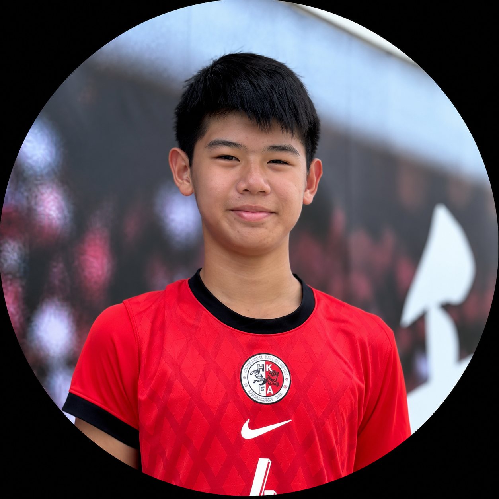
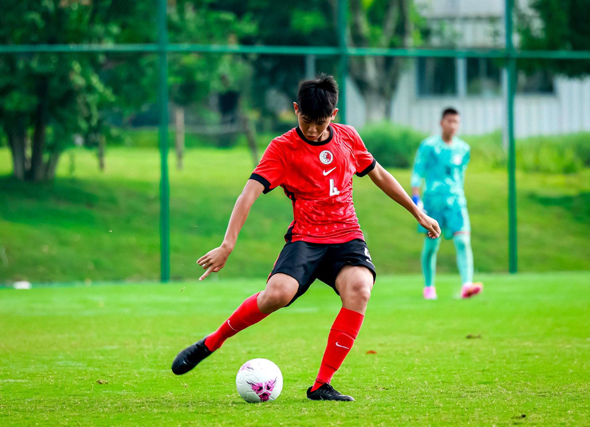

2026–27
Hong Kong U15 Representative Team
Regular squad member · Starting XI
- Phoenix Cup — International Youth Football Elite Tournament, Chengdu 1st Runner-up
Player Introduction · Hong Kong, China
Centre Back · Defensive Midfielder

At 14, Tse Long Tin represents Hong Kong U15 while competing at club level for Kitchee Sports Club U16. A 186 cm centre back who can also play defensive midfield, he combines experience against older opposition with recorded speed of 11.80 seconds over 100 m and 24.00 seconds over 200 m. His profile is supported by representative tournaments, domestic club honours and HKFA talent identification.
Tse Long Tin · Player Profile
Information current to October 2026
Regular squad member · Starting XI
| Season | Competition | Result |
|---|---|---|
| 2025–26 | Hong Kong Premier Youth League U16 Championship Group | Champion |
| 2025–26 | Hong Kong Premier Youth League U14 FA Cup | Champion |
| 2024–25 | Hong Kong Premier Youth League U14 FA Cup | Champion |
| 2024–25 | Hong Kong Premier Youth League U14 Championship Group | 1st Runner-up |
| Season | Team | Apps | Goals |
|---|---|---|---|
| 2026–27 Ongoing | Kitchee U16 | 3 | — |
| 2025–26 | Kitchee U16 | 14 | 1 |
| 2025–26 | Kitchee U14 | 20 | 1 |
| Season | School / Competition | Result |
|---|---|---|
| 2026–27 | Diocesan Boys' School · Inter-School Football Competition | Ongoing |
| 2025–26 | La Salle College · Inter-School Football Competition | 2nd Runner-up |
| 2024–25 | La Salle College · Inter-School Football Competition | 1st Runner-up |
| Season | Event · Hong Kong-wide Junior High School Division One | Result |
|---|---|---|
| 2025–26 | 200 m · 24.00 s | 3rd Place |
| 2025–26 | 100 m · 11.80 s | 5th Place |
| 2025–26 | 4 × 100 m relay | 4th Place |
| 2024–25 | 4 × 100 m relay | 1st Place |
| 2024–25 | Overall Individual Championship | 1st Overall |
Tse Long Tin · Photo Highlights
Centre Back · Defensive Midfielder

Tse Long Tin · Photo Highlights
Hong Kong · Club · School · Athletics